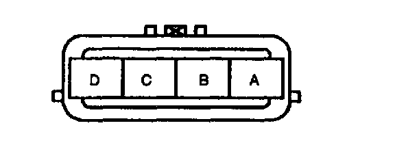
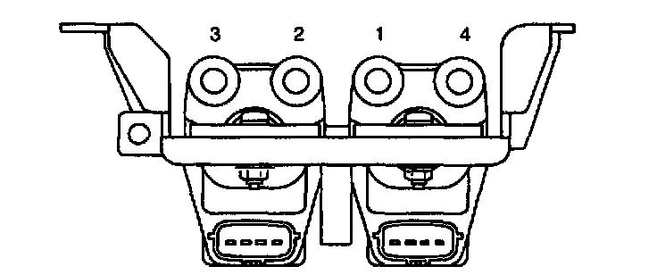
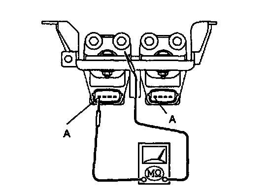

Ignition Coil Tests
Igniter- Carry out spark test.
Primary Coil Winding
1. Disconnect the ignition coil connectors.

2. Inspect for continuity between terminals A and D by using an ohmmeter.
3. If there is no continuity, replace the ignition coil.
Secondary Coil Winding
1. Disconnect the high-tension leads.

2. Measure the resistance from lead hole 1 to 4, and lead hole 2 to 3 by using an ohmmeter.
Specification: 8.24-12.36 Kohm (20°C (68°F))
3. If not as specified, replace the ignition coil.
Insulation Resistance of Case
1. Disconnect the high-tension leads.
2. Disconnect the ignition coil connector.

3. Measure the insulation resistance between terminal A, and ignition coil case by using a 500 Vmega tester.
Specification: Above 10 Mohm
4. If not as specified, replace the ignition coil.